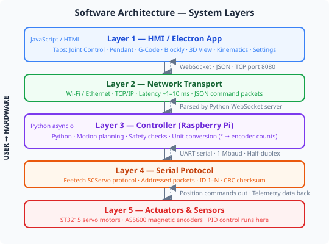
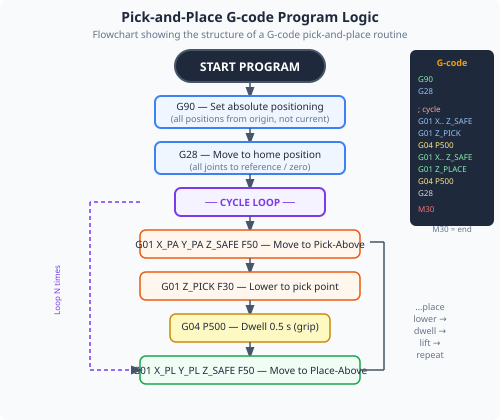
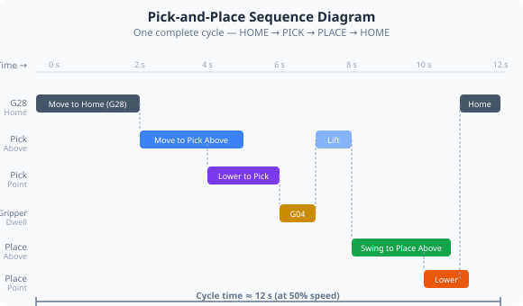

Duration: 3–4 hours · Prerequisites: Modules 3, 4, 8

The robot arm system has multiple software layers, each with a specific responsibility. Understanding how they relate helps you debug problems, extend the system, and understand commercial robot software.
requestId field. The server echoes the same ID back in its response, allowing the app to match each response to the specific command that triggered it — even when status push messages are arriving between commands. This is important for reliable asynchronous communication and is worth noting when studying the WebSocket protocol: it is not a simple request-response system, but a stream of mixed push messages and correlated responses.


G-code is a numerical control language developed in the 1950s and still the dominant standard for CNC machines and robot motion programming. It consists of lines of simple commands.
G0 J1=45 J2=30 — rapid (PTP) move to joint angles (degrees)G1 J1=45 J2=30 F500 — linear interpolated move, F = feed rate in steps/secG28 — home all jointsG04 P1000 — dwell for 1000 millisecondsM10 / M11 — tool output on / offM62 / M63 — digital output set / clearM30 — end of programG-code is text-based and file-based — programs are saved as .gcode or .nc files and loaded into the application. This makes it easy to version-control, share, and edit programs with any text editor.
| Approach | Best for | Requires |
|---|---|---|
| Blockly | Beginners, quick sequences | No coding knowledge |
| G-code | Precise motion programs, CNC-like tasks | Text file editing |
| RAPID | Students with programming background or targeting industrial roles; conditional logic and multi-step sequences | Yes — ABB RAPID subset |
MoveJ target — joint-space move to a named positionMoveAbsJ [j1,j2,j3,j4,j5,j6] — move to absolute joint anglesMoveJOffs target, dx, dy, dz — move relative to a stored positionMoveLXYZ x, y, z — Cartesian linear move to coordinatesMoveLOffs target, dx, dy, dz — linear move with offsetWaitTime seconds — pause/dwellSetDO signal, value — set a digital outputHome, GripperOpen, GripperClose, PumpOn, PumpOffOpen a text editor (Notepad is fine). Type the following G-code program and save it as pick_place.gcode on your desktop:
In the app, navigate to G-Code Control. Use the Load File button to open your pick_place.gcode file. You should see the commands listed in the preview panel.
Confirm the workspace is clear and torque is enabled. Click Run to execute the program. Observe each step.
Modify the program: change the feed rate (F value) on one move to 100 (very slow). Reload and run again. Observe the difference in movement speed for that step only.
Add a G04 P2000 dwell at the midpoint (after the second move). Reload and run to confirm the pause is in the right place.
G-code is used in virtually every CNC machine on earth — from small desktop mills to multi-million-pound machining centres. The commands you wrote in this module are structurally identical to programs running on industrial production equipment today. If you can read and write G-code, you can communicate with CNC operators and understand their programs.
The client-server split between the app and the Pi is a fundamental design pattern used throughout industry. It means the intelligence of the control system is in the software, not wired into hardware — so you can update, extend, or replace the app without changing any hardware. This is how modern machine tools and robots are increasingly designed: the physical machine is a "dumb" server, and the smart logic runs on software that can be updated remotely.
1. In G-code, what does the F parameter in a G01 command control?
2. Why is the Electron app described as the "client" and the Raspberry Pi as the "server"?
3. Which programming approach would you choose to implement complex logic — for example, checking a sensor value and choosing one of three different move sequences?